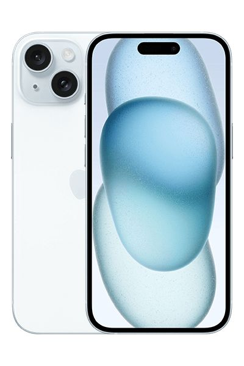
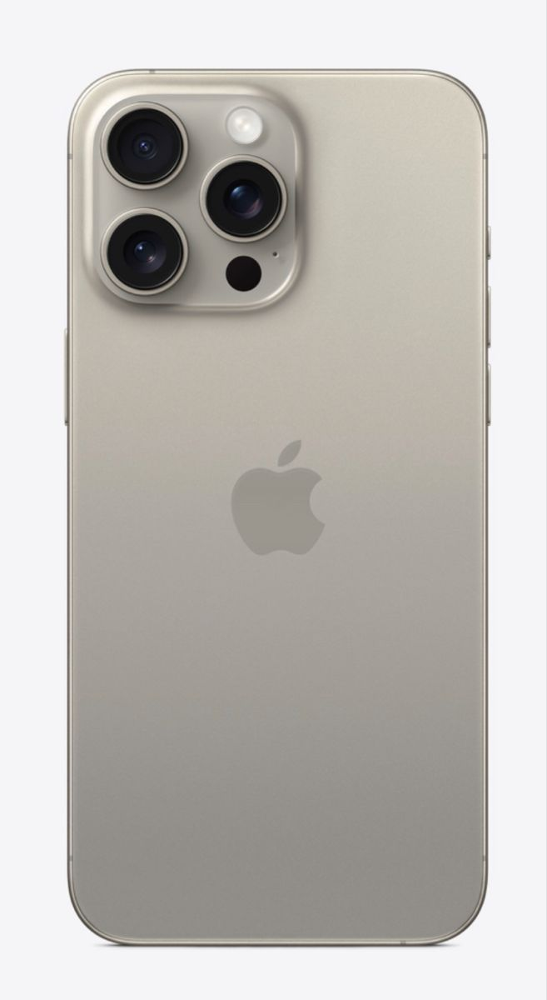

1. Giới thiệu chung
iPhone là dòng điện thoại thông minh (smartphone) do công ty Apple Inc. (Hoa Kỳ) thiết kế, sản xuất và phân phối. Chiếc iPhone đầu tiên được ra mắt vào năm 2007 và đã tạo ra một cuộc cách mạng trong ngành công nghiệp điện thoại di động nhờ màn hình cảm ứng đa điểm và hệ điều hành iOS.
iPhone được dùng để phục vụ nhu cầu liên lạc (gọi điện, nhắn tin), giải trí (chụp ảnh, quay phim, xem phim, chơi game), làm việc (email, lịch, ghi chú, các ứng dụng văn phòng) và kết nối mạng xã hội. Ngoài ra, iPhone còn tích hợp nhiều tính năng bảo mật và hệ sinh thái đồng bộ chặt chẽ với các thiết bị khác của Apple như MacBook, iPad, Apple Watch.
2. Hình ảnh minh họa
Dưới đây là hình ảnh minh họa về mặt trước và cụm camera của iPhone:


3. Các đặc điểm nổi bật
- Sử dụng hệ điều hành iOS độc quyền, mượt mà và được tối ưu hóa riêng cho phần cứng Apple.
- Camera chất lượng cao, hỗ trợ quay video 4K và chụp ảnh chân dung, ảnh đêm.
- Chip xử lý dòng A-series (Apple Silicon) mạnh mẽ, hiệu năng và tiết kiệm pin tốt.
- Bảo mật cao với Face ID/Touch ID và hệ sinh thái ứng dụng được kiểm duyệt nghiêm ngặt trên App Store.
- Đồng bộ dữ liệu liền mạch với các thiết bị khác của Apple thông qua iCloud.
- Thời gian hỗ trợ cập nhật phần mềm dài, thường trên 5 năm kể từ ngày ra mắt.
4. Bảng thông tin chi tiết (ví dụ: iPhone 15)
| Thông số | Chi tiết | Ghi chú |
|---|---|---|
| Màn hình | 6.1 inch, Super Retina XDR OLED | Độ phân giải cao, hỗ trợ HDR |
| Chip xử lý | Apple A16 Bionic | 6 nhân CPU |
| Camera sau | 48MP chính + 12MP góc siêu rộng | Hỗ trợ zoom quang 2x |
| Dung lượng pin | Khoảng 3349 mAh | Sử dụng cả ngày |
| Hệ điều hành | iOS 17 (có thể nâng cấp) | Cập nhật định kỳ hằng năm |
5. Ưu điểm và hạn chế
Ưu điểm
- Hiệu năng mạnh mẽ, mượt mà nhờ chip xử lý và tối ưu phần mềm tốt.
- Camera chụp ảnh, quay video chất lượng cao, thuộc top đầu thị trường.
- Độ bảo mật riêng tư cao, ít bị virus, mã độc so với các nền tảng khác.
- Thời gian hỗ trợ cập nhật phần mềm lâu dài, giữ giá trị sử dụng bền vững.
Hạn chế
- Giá thành khá cao so với nhiều dòng điện thoại Android cùng phân khúc cấu hình.
- Hệ sinh thái khép kín, khó tùy biến sâu và khó chuyển dữ liệu sang nền tảng khác.
- Một số phụ kiện chính hãng (sạc, tai nghe) thường phải mua riêng, giá cao.